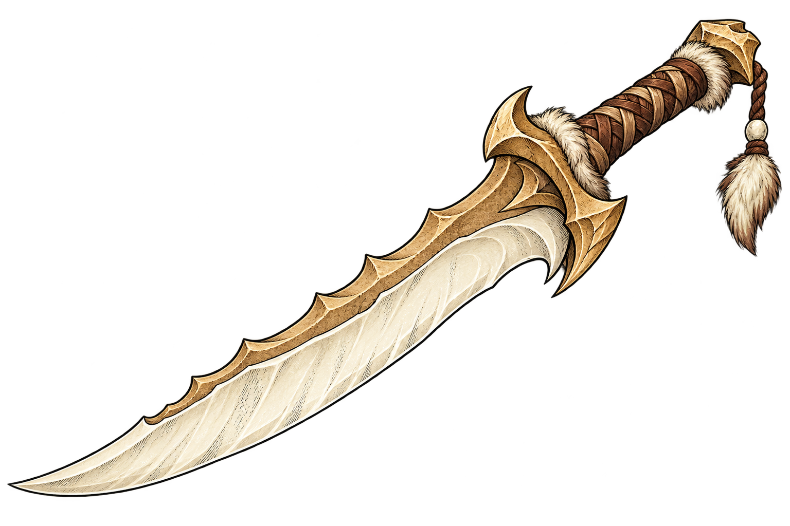

โล่เขี้ยวออร์ก
orc-tusk-shield
orc · anchor 24
effect:E62 · optionalยังไม่เปิด | กดตั้งรับ 1 พลัง · ครั้งเดียวต่อชิ้นต่อช่วง | ลดความเสียหายครั้งถัดไป 1 ชีวิต (ปรับตามพลัง effect สูงสุด 2) หมดเมื่อเปลี่ยนช่วง | ไม่ลดการจ่ายชีวิตตามสัญญา/ราคาสินค้า ไม่กันคำสาปจากการเปิดโล่นี้เอง; ใช้ผลแท้/ปลอมและคำสาปผ่านกฎเปิดใช้เดิม
ตั้งรับไม่ทับซ้อน เลือกเกราะที่แรงที่สุด; นับ lifeLost หลังลดจริง |
แหวนตราราตรี
vampire-nocturne-signet
vampire · anchor 20
effect:E46 · optionalยังไม่เปิด | ถือแหวนชิ้นเดิมตั้งแต่ต้นจนจบช่วง | เพิ่มดอกเบี้ยเงินต้นที่ครบช่วง +2 จุดเปอร์เซ็นต์; โบนัสแหวนรวมไม่เกิน +4 จุด (ฐาน10%ไม่เปลี่ยน) | เงินฝากใหม่/แหวนเพิ่งได้ไม่มีดอกเบี้ยย้อนหลัง; โบนัสใช้ค่าต่ำกว่าระหว่างต้นและจบช่วง
อัตราโบนัสเก็บเป็น basis point จำนวนเต็ม ปัดเศษลง; จ่ายเงินท้ายสุดปัดลงครั้งเดียว |
คาลิเปอร์วัดแรงบิด
autometa-torque-caliper
autometa · anchor 18
effect:E01 · optionalยังไม่เปิด | ใช้ผ่านปุ่มตรวจราคาเดิม · ไม่ต้องเปิดใช้แยก | ให้สิทธิ์ประหยัดค่าพลังตรวจราคาเพิ่ม 1 ครั้งต่อชิ้นต่อช่วง ยังใช้โควตาตรวจตามปกติ | หากรายการนั้นฟรีจากสิทธิ์พ่อค้าอยู่แล้ว ไม่กินสิทธิ์เครื่องมือซ้ำ
ใช้แล้วโอน/ฝากถอน/สำเนาไม่เติม charge เดิม; รวมแหล่งตรวจฟรีตามกฎเดิมไม่ทำพลังติดลบ |
เครื่องแปลความคิด
alien-thought-translator
alien · anchor 20
effect:E11 · optionalยังไม่เปิด | ทำงานขณะถือและเป็นเจ้าของ | เพิ่มโอกาสพ่อค้ายอมรับราคาต่ำ +2 จุดเปอร์เซ็นต์ต่อหน่วย effect; โอกาสรวมสูงสุด95% | ไม่บังคับผู้เล่นอื่นรับข้อเสนอ ไม่ข้าม overvalue/backlash หรือสถานะห้ามซื้อขาย
ถือได้สูงสุด5ชิ้นต่อ kind ตามระบบเดิม; ไม่เปิดความจริงของสินค้า |
เหรียญผ่านแดน
darkone-crossing-token
darkone · anchor 18
effect:E43 · optionalยังไม่เปิด | ตอนจ่ายค่าล้างประวัติหลังจบดวล | ลดค่าล้างประวัติ 10% ต่อหน่วย effect รวมสูงสุด50%; หากราคาฐานมากกว่า0 ยังจ่ายอย่างน้อย1เครดิต | ไม่ยกเลิกดวล ไม่คืนความไว้ใจ ไม่ล้างคดีฟรี ไม่ให้ cashback
คำนวณจากใบประกาศจริงทุกคดี ณ เวลาจ่าย หัก/ล้างเพียงครั้งเดียวในธุรกรรมเดียว |
เข็มทิศกระแสน้ำ
deepsea-tide-compass
deepsea · anchor 18
effect:E34 · optionalยังไม่เปิด | ตอนเปลี่ยนประตูที่เปิดได้ | ลดค่าพลังเปลี่ยนประตู 1 ต่อหน่วย effect รวมลดไม่เกิน2; เหลืออย่างน้อย1พลัง | ยังเพิ่มต้นทุนฐานตามจำนวนที่รีจริง และไม่เปิดประตูปิด/เปลี่ยน NPC หลังเลือก
อาจไม่มีส่วนลดในการรีครั้งแรกที่ต้นทุนฐาน1; ป้ายแสดงราคาสุทธิจริงก่อนกด |
ค้อนรัง
swarm-brood-hammer
swarm · anchor 22
effect:E47 · optionalยังไม่เปิด | ตอนจ่ายเพิ่มช่องคลัง | ลดราคาเพิ่มช่องคลัง 2เครดิตต่อหน่วย effect แต่ไม่เกินครึ่งของราคาฐานและเหลืออย่างน้อย1เครดิต | ไม่คืนส่วนลดช่องที่ซื้อแล้ว ฝากถอนของไม่สร้างเงิน/charge และไม่ลดราคาฝากเงิน
เพิ่มได้หนึ่งช่องต่อคำสั่งสำเร็จ; retry ไม่หักซ้ำหรือเพิ่มช่องซ้ำ |
 ดาบเขี้ยวรอยแยก
beast-riftfang-sword
beast · anchor 24
effect:E38 · optionalยังไม่เปิด | ประกาศเมื่อเข้าดวล · มีสิทธิ์ต่อชิ้นต่อช่วง | แต้มได้เปรียบเสมอที่เปิดเผย +1 ใช้ได้กับตาเสมอจริงครั้งแรกในช่วงนั้น; ไม่เพิ่มเมื่อถือซ้ำ | แจ้งทั้งคู่ก่อนส่งมือ โดยไม่เผย guard/สถานะลับของคู่แข่ง; ถ้าทั้งคู่มีผลเดียวกันหักล้างและยังเล่นตาต่อไป
ตรึงสิทธิ์ตามของที่ถือเมื่อเริ่มดวล; จ่าย charge เมื่อเสมอจริง รวมไม่เกิน1แต้ม; rarity ไม่เพิ่มจำนวนแต้ม |